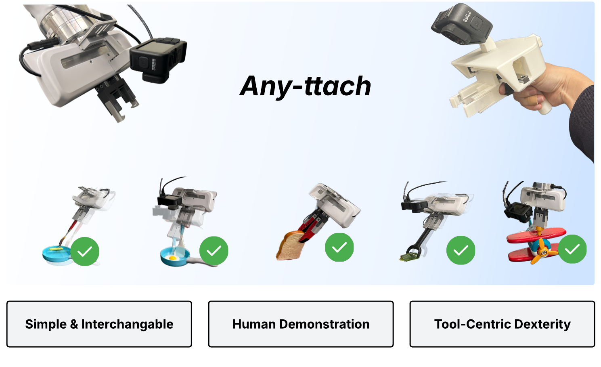
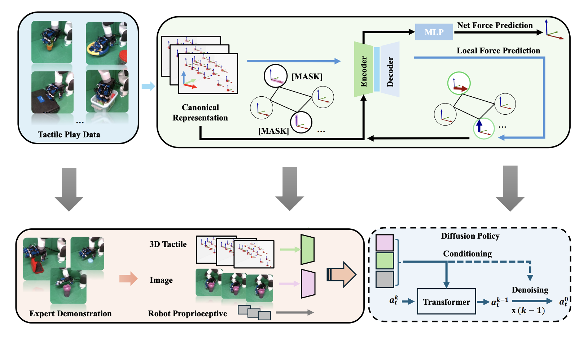
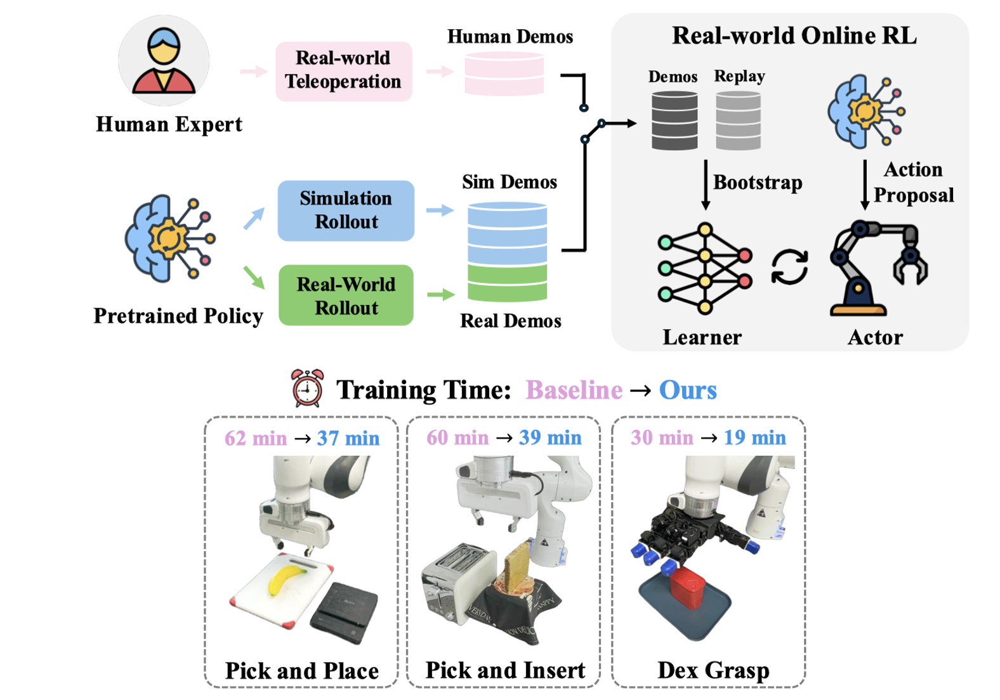

News
05.2026
I will join Amazon Robotics as an Applied Scientist Intern this summer.02.2026
Co-organizing the Workshop on Manipulation Robustness: Towards Human-Level Robustness in Real-World Manipulation at ICRA 2026.12.2025
Released OpenTouch, a benchmark for full-hand tactile sensing in the wild.12.2025
Released TwinAligner, a physics-aware real2sim2real framework for robotic manipulation.09.2025
ClutterDexGrasp accepted to CoRL 2025 as oral.Publications
* equal contribution

Any-ttach: Quick End-effector Swapping Enables Manipulation Dexterity with Simplicity
Weizhe Ni*,
Jinzhou Li*,
Haoyu Li,
Wenjing Pan,
Cody Andres Alessio-Bunnell,
Xianyi Cheng
Under Review, 2026
Webpage •
Paper

OpenTouch: Bringing Full-Hand Touch to Real-World Interaction
Yuxin Ray Song*,
Jinzhou Li*,
Rao Fu*,
Devin Murphy,
Kaichen Zhou,
Rishi Shiv,
Yaqi Li,
Haoyu Xiong,
Crystal Elaine Owens,
Yilun Du,
Yiyue Luo,
Xianyi Cheng,
Antonio Torralba,
Wojciech Matusik,
Paul Pu Liang
arXiv 2025
Webpage •
Paper
•
Code

AdapTac-Dex: Adaptive Visuo-Tactile Fusion with Predictive Force Attention for Dexterous Manipulation
Jinzhou Li*,
Tianhao Wu*,
Jiyao Zhang**,
Zeyuan Chen**,
Haotian Jin,
Mingdong Wu,
Yujun Shen,
Yaodong Yang,
Hao Dong
IROS 2025
Webpage •
Paper
•
Code

TwinAligner: Visual-Dynamic Alignment Empowers Physics-aware Real2Sim2Real for Robotic Manipulation
Hongwei Fan*,
Hang Dai*,
Jiyao Zhang*,
Jinzhou Li,
Qiyang Yan,
Yujie Zhao,
Mingju Gao,
Jinghang Wu,
Hao Tang,
Hao Dong
arXiv 2025
Webpage •
Paper
•
Code

Canonical Representation and Force-Based Pretraining of 3D Tactile for Dexterous Visuo-Tactile Policy Learning
Tianhao Wu,
Jinzhou Li*,
Jiyao Zhang*,
Mingdong Wu,
Hao Dong
ICRA 2025
Webpage •
Paper
•
Code

ClutterDexGrasp: A Sim-to-Real System for General Dexterous Target Grasping in Cluttered Scenes
Zeyuan Chen*,
Qiyang Yan*,
Yuanpei Chen*,
Tianhao Wu,
Jiyao Zhang,
Zihan Ding,
Jinzhou Li,
Yaodong Yang,
Hao Dong
CoRL 2025 (Oral ~5%)
Webpage •
Paper

SimLauncher: Launching Sample-Efficient Real-world Robotic Reinforcement Learning via Simulation Pre-training
Mingdong Wu*,
Lehong Wu*,
Yizhuo Wu*,
Weiyao Huang,
Hongwei Fan,
Zheyuan Hu,
Haoran Geng,
Jinzhou Li,
Jiahe Ying,
Long Yang,
Yuanpei Chen,
Hao Dong
IROS 2025
Webpage •
Paper
Experience
Amazon Robotics
Applied Scientist Intern II
with Dr. Hadi Tabatabaee, Prof. Roberto Martín-Martín, and Dr. Yuyin Sun
2026 Summer
Service
Reviewer: ICRA 2024, 2025, 2026